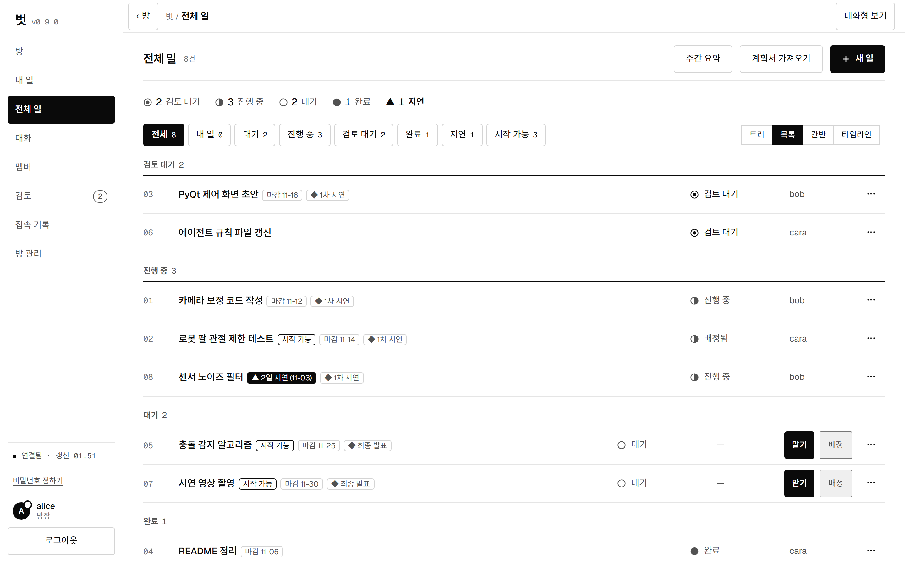
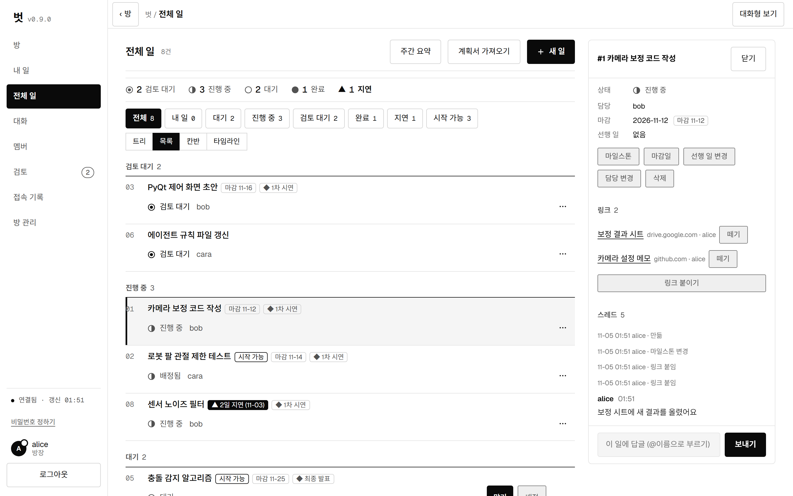
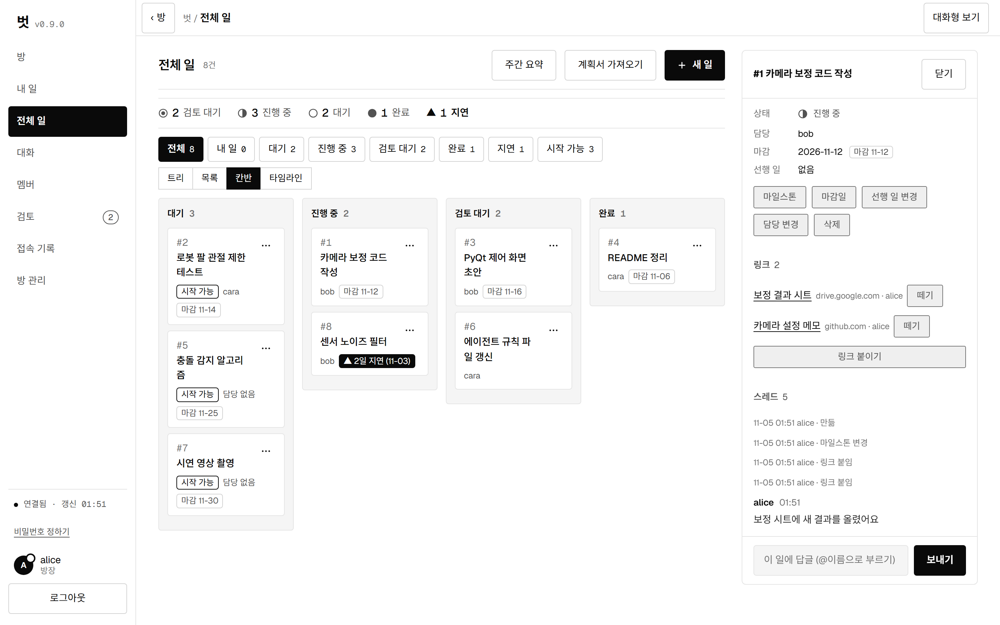
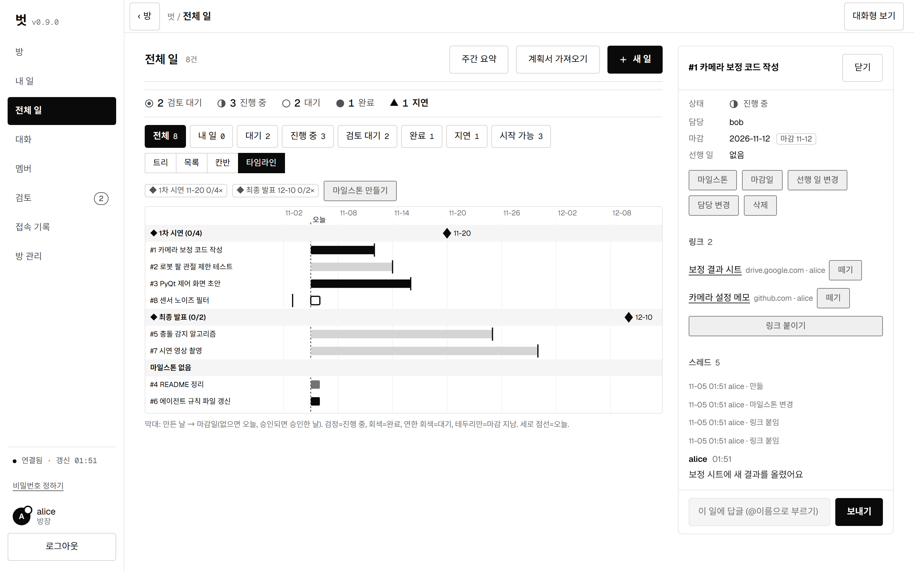
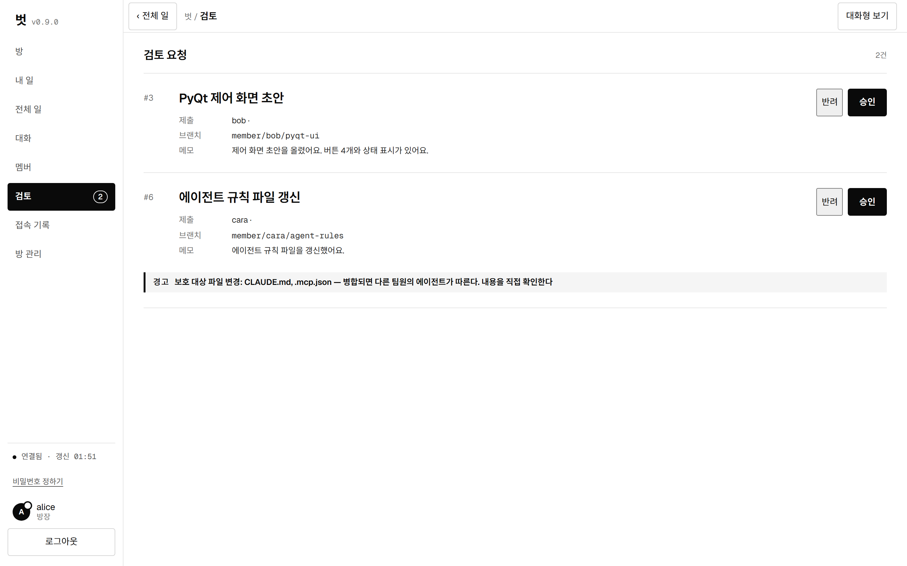
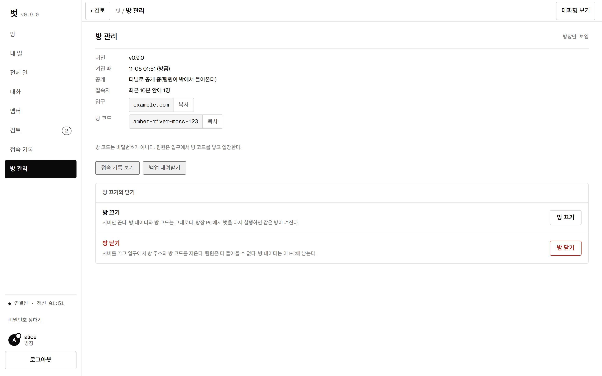
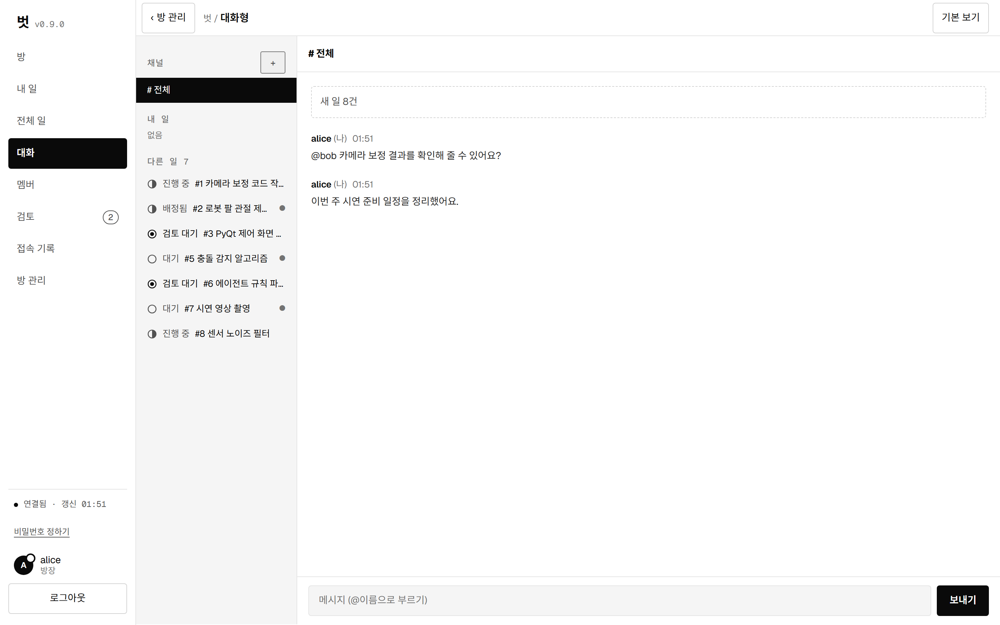
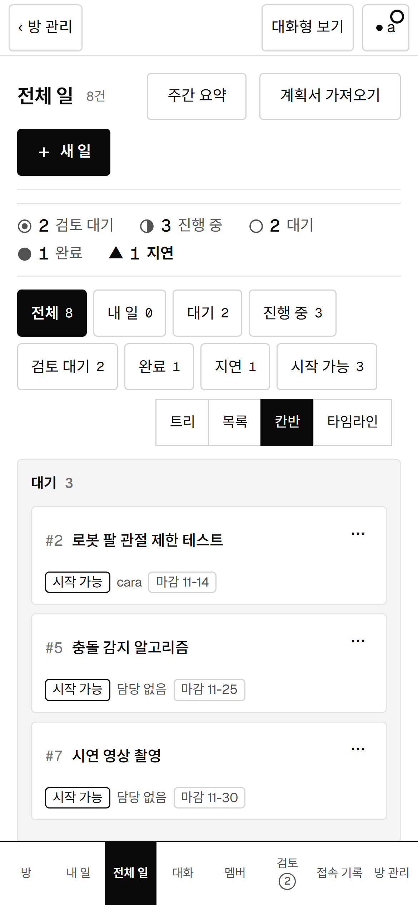

AI 에이전트와 일하는 팀을 위한 방
팀원마다 자기 AI 에이전트로 일하고, 결과는 GitHub PR로 모여요. 방장이 승인해야 합쳐지니까, 누가 무엇을 바꿨는지 한곳에서 보여요.
Windows 10·11 · 무료 · MIT 라이선스
- 방장이 승인승인과 병합은 방장만 해요
- main 보호팀원은 자기 가지에만 올려요
- 어떤 에이전트든MCP를 쓰는 에이전트면 연결돼요
- 내 PC에서방 서버는 방장 PC에서 돌아가요
왜 벗이에요?
팀원 모두가 AI 에이전트를 쓰면 일이 빨라지지만, 이런 일이 생겨요.
누가 뭘 하는지 몰라요
에이전트마다 따로 일해서 같은 일을 두 번 하거나 빠뜨려요. 벗은 일을 배정하고 맡은 사람을 보여 줘요.
main이 꼬여요
에이전트가 main을 바로 고치면 되돌리기 어려워요. 벗은 팀원이 자기 가지에만 올리게 하고 제출 뒤 바뀐 가지는 승인하지 않아요.
누가 확인했는지 남지 않아요
모든 제출은 방장의 승인을 거쳐요. 에이전트 지시 파일(CLAUDE.md 등)을 바꾸면 방장이 확인했다고 밝혀야 해요.
보통은 이렇게 하는데
에이전트 여러 개를 팀으로 쓸 때의 흔한 방식과 비교했어요.
| 보통은 | 벗은 | |
|---|---|---|
| 일 나누기 | 메신저와 구두로 | 일을 만들고 배정하고 맡아요 |
| 결과 합치기 | 각자 push, 서로 충돌 | 자기 가지 제출 → 방장 승인 → 병합 |
| 위험한 변경 | 리뷰하다 놓쳐요 | 지시·설정 파일 변경은 따로 경고해요 |
| 진행 상황 | 물어봐야 알아요 | 칸반·타임라인·주간 요약으로 보여요 |
| 비용 | 서버와 구독이 필요해요 | 방장 PC에서 돌려서 따로 서버 비용이 없어요 |
화면
브라우저(또는 앱 창)로 방 화면을 열어요. 에이전트가 없어도 일 목록·검토·대화를 볼 수 있어요.








기능
일 흐름
만들기 → 배정 → 맡기 → 제출 → 검토 → 승인. 선행 일, 마감일, 마일스톤을 지원해요.
여러 보기
목록, 트리, 칸반, 타임라인, 슬랙 같은 대화형 보기. 휴대폰 화면도 맞춰져 있어요.
대화와 멘션
방 대화, 일마다 스레드, @이름 부르기, 긴급 공지.
링크 첨부
결과물의 https 주소를 일에 붙여요. 파일은 올리지 않아서 서버가 가벼워요.
주간 요약·알림
마감이 지난 일, 정체된 일을 모아 주고 Discord 웹훅으로 알려요.
계획서 가져오기
마크다운 계획서를 읽어서 일을 한꺼번에 만들어요.
방 관리
접속자, 입구 주소와 방 코드, 백업, 방 끄기·닫기를 한 화면에서.
백그라운드 실행
터미널을 닫아도 방은 켜져 있어요. 시계 옆 아이콘으로 끄거나 닫아요.
3분 시작하기
벗에는 세 역할이 있어요. 서버장은 보통 한 명이고, 방장과 팀원이 대부분이에요.
- 서버장이 입구를 열어요Cloudflare 도메인과 API 토큰으로
beot owner setup을 한 번 실행하고, 방장에게 방장 열쇠를 줘요. 자세한 순서는 서버장 안내서에 있어요. - 방장이 방을 만들어요입구의 방장 탭에서 방을 만들고, 방장 PC에서
beot start --code 방코드를 실행해요. 일을 만들고 팀원을 초대해요. - 팀원이 들어와요방 코드를 받고 아래 명령을 실행해요. 닉네임과 비밀번호를 정하면 끝이에요.
beot join --server 서버장주소 - 에이전트가 일해요팀원의 에이전트가
my_tasks로 일을 받고, 자기 가지에 올리고, 제출해요. 방장이 승인하면 합쳐져요.
에이전트 연결
join이 작업 폴더에 방 MCP 설정과 안내 파일을 만들어 줘요. 에이전트를 그 폴더에서 열면 방 도구가 보여요.
Claude Code · Codex
확인했어요. 방 도구를 불러 일 목록을 읽는 것까지 시험했어요.
Cursor · Gemini CLI · VS Code
join --apps cursor,gemini,vscode로 설정 파일을 만들어요. 앱마다 확인 상태가 달라서 릴리스 노트에 적어요.
herdr · 마당(Madang)
터미널 작업공간 도구에서 에이전트를 바로 열어요(join --herdr).
알아 두세요. 방의 대화나 다른 팀원의 보고는 에이전트에게 "데이터"로만 읽혀요. 대화 속 요청은 실행하지 않고, 지시는 방장의 지시서에서만 받아요.
데이터와 보안
내 PC에 있어요
일과 대화는 방장 PC의 파일(SQLite)에 저장돼요. 백업은 방 화면에서 받아요.
토큰은 해시로
방 토큰과 비밀번호는 해시로만 저장하고, 로그인 실패는 횟수를 제한해요.
방장이 꺼요
방 끄기는 서버만 끄고, 방 닫기는 입구에서 방 주소도 지워요. 방 데이터는 PC에 남아요.
문제 해결
처음 실행할 때 Windows가 경고해요
코드 서명을 하지 않아서 SmartScreen이 경고할 수 있어요. 추가 정보 → 실행을 누르면 돼요.
방장 PC가 꺼지면 방은요?
방 서버도 같이 꺼져서 팀원이 들어올 수 없어요. 방장 PC에서 벗을 다시 실행하면 같은 방이 켜져요. 컴퓨터를 켤 때 방을 켤지 물어보게 할 수도 있어요.
팀원이 방에 못 들어와요
방 코드가 맞는지, 방이 켜져 있는지 확인하세요. 비밀번호를 잊었으면 방장에게 재설정 코드를 받아요(24시간 안에 한 번만 쓸 수 있어요).
macOS·Linux에서도 되나요?
지금은 Windows만 확인했어요.